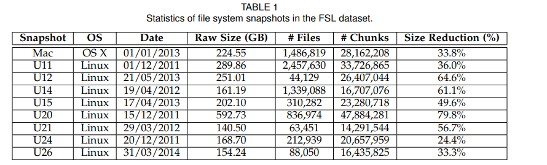
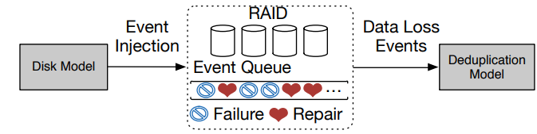

| Venue | Category |
|---|---|
| TC'18 | Deduplication Reliability |
A Simulation Analysis of Redundancy and Reliability in Primary Storage Deduplication1. SummaryMotivation of this paperMethod NameImplementation and Evaluation2. Strength (Contributions of the paper)3. Weakness (Limitations of the paper)4. Future Works
mitigate the possibility of data loss by reducing storage footprints. amplifies the severity of each data loss event, which may corrupt multiple chunks or files that share the same lost data.
add redundancy via replication or erasure coding to post-deduplication data. propose quantitative methods to evaluate deduplication storage reliability.
loss variations: different failures (device failures, latent sector errors), different granularities of storage (chunk, files) repair strategies: repair strategies determine whether import data copies are repaired first (affect reliability in different ways)
Mac OS X server: user011 - user026 (eight users): taken from different users' home directories with various types of files. 
time: September 18, 2009 the average chunk size: 8KB
Also, consider the notion of a deduplication domain (a set of file system snapshots over which it performs deduplication).
deduplication domain size specifics the number of file system snapshots included in a deduplication domain generate 10 random deduplication domains for each deduplication domain size.
the majority of chunks have small reference counts. (e.g., referenced by exactly once) losing the highly referenced chunks may lead to severe loss of information as well as high deviations in the reliability simulations.
- share the same minimum chunk fingerprint (Minhash, Broder's theorem)
- share the same maximum chunk fingerprint
- have the same extension (provide an additional indicator if the two files are similar)
FSL shows significant fractions of intra-file redundancy. The most common redundancy source are duplicate files
whole-file deduplication is effective.
- failure patterns
- metadata
- data layout

Highly referenced chunks only account for a small fraction of physical capacity after deduplication the chunk reference counts show a long-tailed distribution It is possible to allocate a small dedicated physical area for storing extra copies of highly refenced chunks
Solution:
do this process offline (no need to change the write/read path) incur moderate stroage overhead
the reference counts of chunks the redundancy sources of duplicate chunks minimum hash is better to determine similar files losing a chunk may not necessarily imply the corruptions of many files
skew distribution. can assign a small dedicated physical area (with only 1% of physical capacity) for the most referenced chunks and first reparis the physical area to improve them. (incurring only limited storage overhead)
- intra-file redundancy
- duplicate files
- similar files